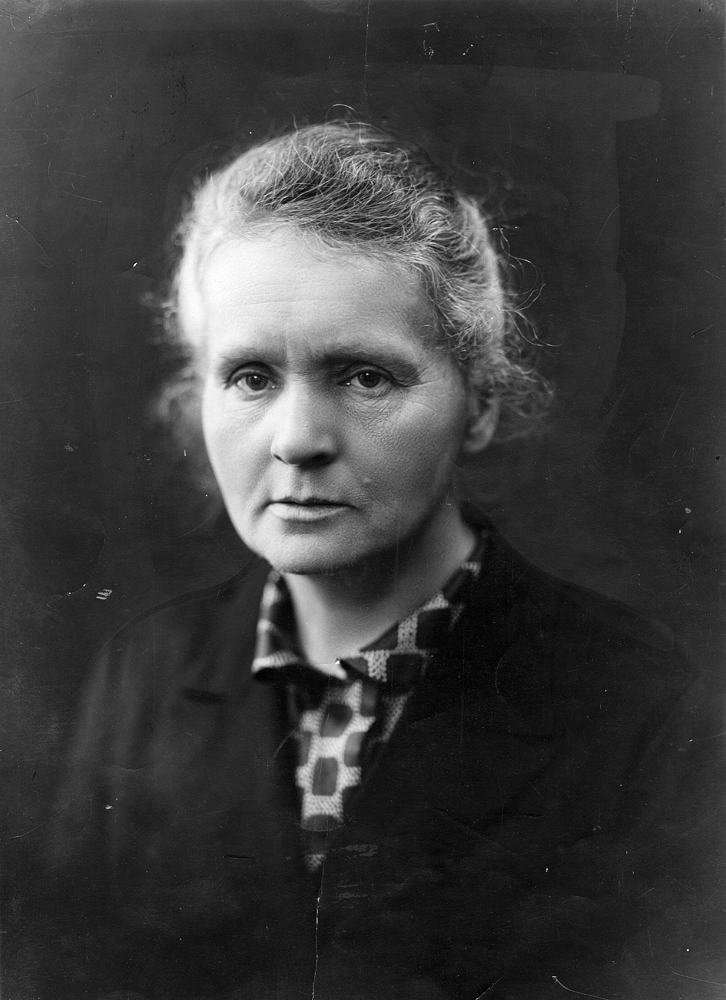

Marie Curie
The First Woman To Win The Nobel Prize (twice)

Image ~ Marie Curie in her laboratory
Here's a brief timeline of Marie's life:
- 1867 - Marie was born in Poland.
- 1891 - Marie moves to Paris to study at Sorbonne.
- 1895 - Marie gets married to Pierre Curie, hence the name Marie Curie.
- 1897 - Marie's first daughter, Irene is born.
- 1902 - Marie was hired to do some experiment and in the process, discovered pure radium.
- 1903 - Marie and her husband, Pierre, are awarded a Nobel Prize for their work with radioactivity.
- 1904 - Marie was promoted to the chief assistant in the laboratory while her husband began teaching at Sorbonne.
- 1906 - Marie is widowed. Marie's husband, Pierre, was killed in an accident. She took his place teaching at Sorbonne and was the first woman professor there.
- 1911 - Marie won her second Nobel Prize, this time on her own, for her continued work in radioactivity.
- 1914 - During WWI, Marie used her radioactive research materials to do "x-rays". The x-rays found bullets and other shrapnel in wounded soldiers.
- 1922 - Marie devotes her life to medicine. Marie became a member of the French Academy of Medicine. She devoted herself to using her knowledge to help people.
- 1932 - Marie and her sister started a research facility to help fight cancer. It is still opened today and is called the Marie Sklodowska Curie Oncology Center.
- 1934 - Marie Curie dies at 66 from aplastic anemia. There was damange to her bone marrow, believed to have been contracted from her long-term exposure to radiation.
A scientist in his laboratory is not a mere technician: he is also a child confronting natural phenomena that impress him as though they were fairy tales.
~ Marie Curie